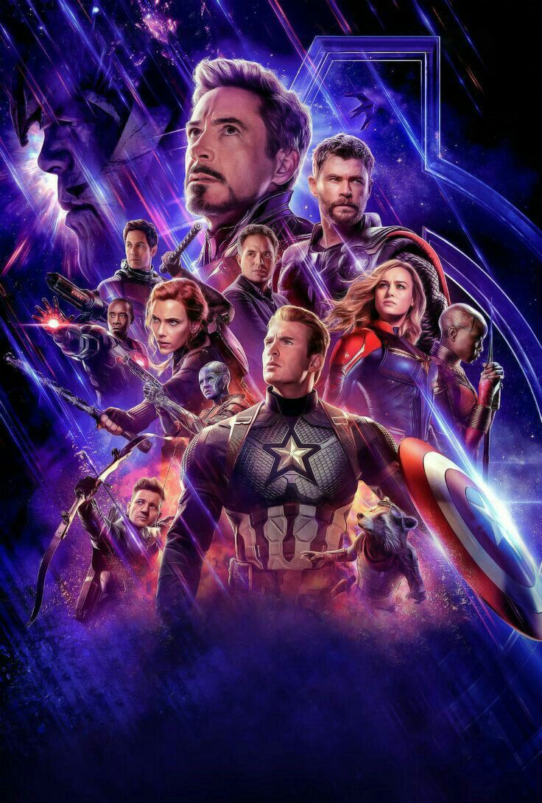
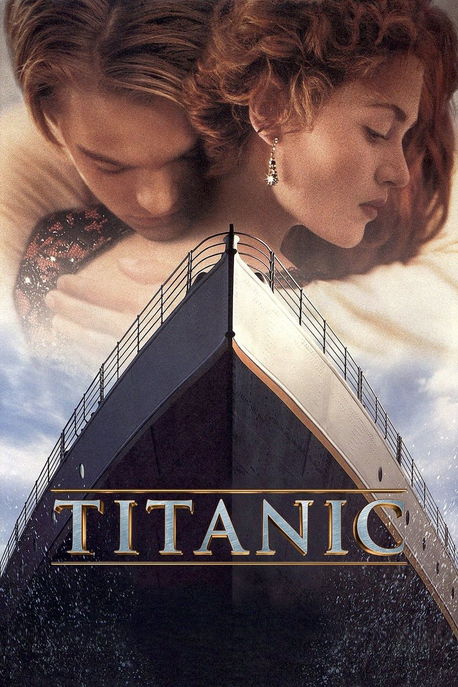
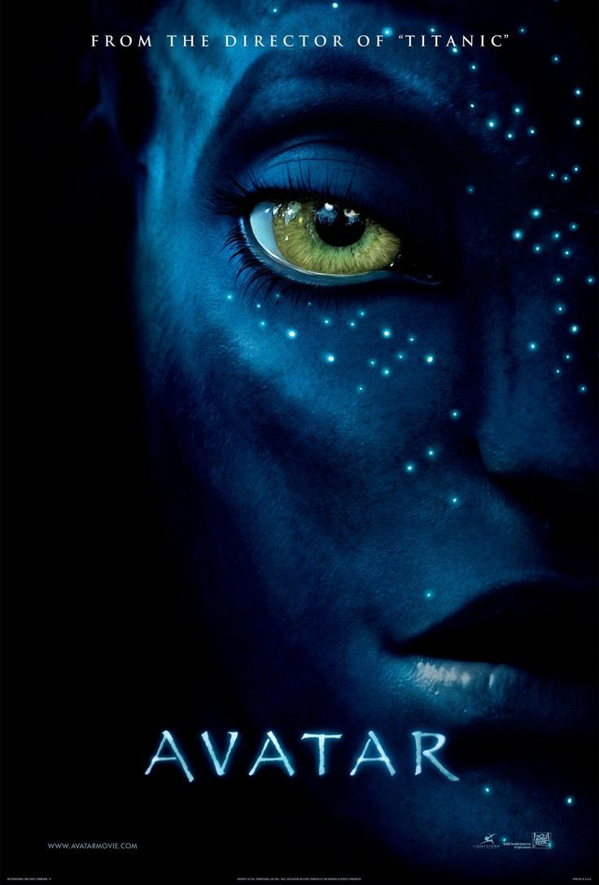
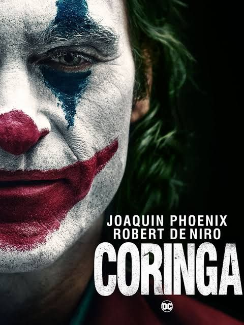

Vigadores: Ultimato
- Ano de Lançamento: 2019
- Diretores: Anthony Russo e Joe Russo
- Gênero: Ação, Aventura e Ficção Científica
- Sinopse: Após a derrota para Thanos, os Vingadores restantes unem forças para tentar reverter os acontecimentos que mudaram o universo. Em uma missão decisiva, eles enfrentam seu maior desafio para restaurar a esperança e salvar bilhões de vidas.

Interestrelar
- Ano de Lançamento: 2014
- Diretor: Christopher Nolan
- Gênero: Ficção Científica e Drama
- Sinopse:Em um futuro onde a Terra está se tornando inabitável, um grupo de astronautas atravessa um buraco de minhoca em busca de um novo planeta para garantir a sobrevivência da humanidade.

Titanic
- Ano de Lançamento: 1997
- Diretor: James Cameron
- Gênero: Romance e Drama
- Sinopse: Durante a viagem inaugural do luxuoso navio Titanic, Jack e Rose vivem um intenso romance que enfrenta diferenças sociais e a maior tragédia marítima da época.

Avatar
- Ano de Lançamento: 2009
- Diretor: James Camaron
- Gênero: Ficção Científica e Aventura
- Sinopse: Jake Sully viaja ao planeta Pandora por meio do programa Avatar e acaba envolvido em um conflito entre os humanos e o povo Na'vi, descobrindo um novo propósito para sua vida.

Coringa
- Ano de Lançamento: 2019
- Diretor: Todd Phillips
- Gênero: Drama, crime e suspense psicológico
- Sinopse: Arthur Fleck, um homem que enfrenta problemas mentais e dificuldades sociais, vê sua vida mudar drasticamente enquanto se transforma no icônico vilão conhecido como Coringa.

O rei lão
- Ano de Lançamento: 1994
- Diretor: Roger Allers e Rob Minkoff
- Gênero: Animação, Aventura e Drama
- Sinopse: Após perder seu pai, o jovem leão Simba precisa superar seus medos e assumir seu lugar como rei das Terras do Reino, enfrentando seu tio Scar.